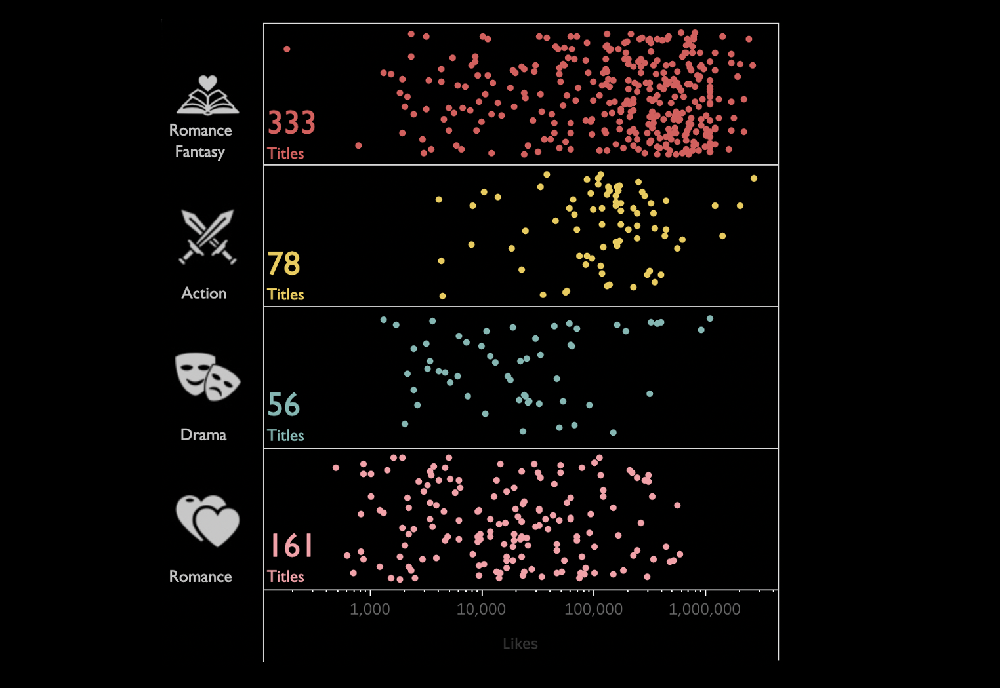
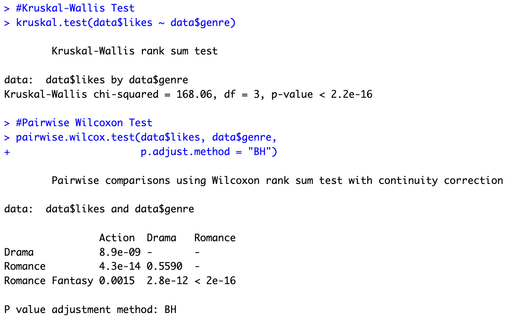
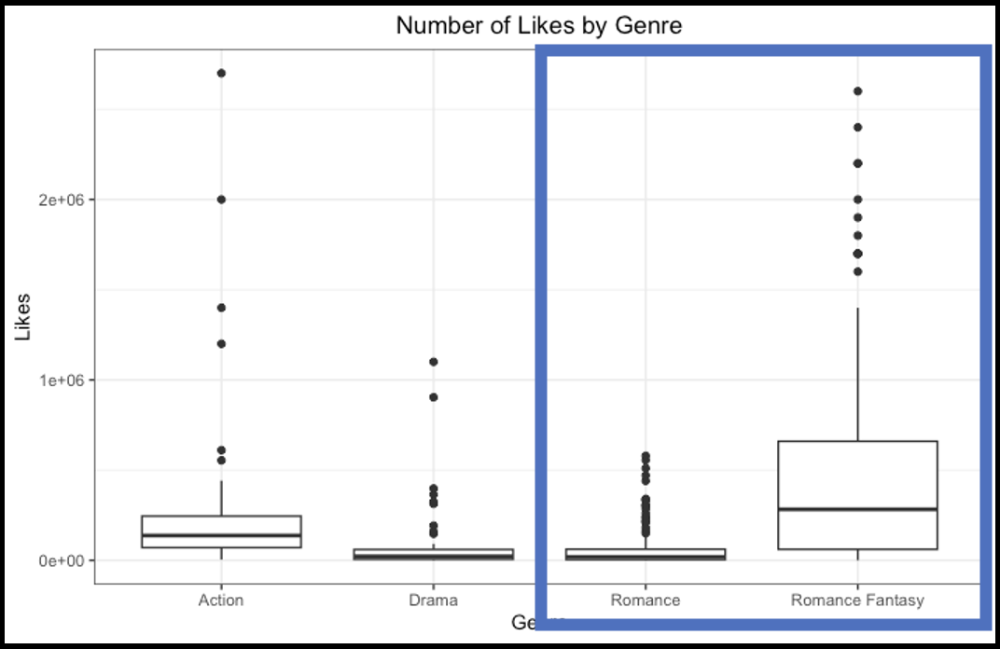
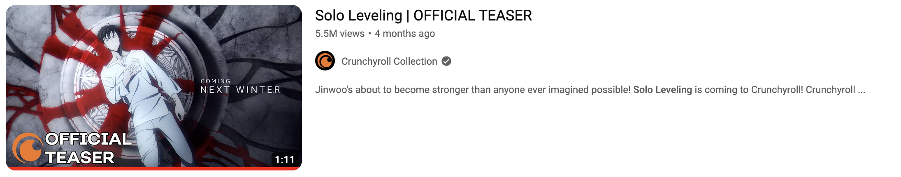

KAKAO WEBTOON TREND
Visualizing popular genre from Kakao Webtoon's Indonesian market using BeautifulSoup
Background
Recently there are a lot of Korean webtoon series getting animated, much-welcomed news to their ardent followers. You might have heard about the recent news about the anime (animation) release announcement of Solo Leveling, which is based on a Korean webtoon series of the same title. In Indonesia, the series is published in Kakao Webtoon platform, which launched on April 1st, 2022. Exploring the app, I noticed that even with the popular action webtoon, the platform seems to be catering more towards romance enthusiasts. So I went to further use the data to verify the distribution of series by genre using the number of likes as a popularity metric.
Data
Data was retrieved from Kakao webtoon homepage on March 23rd 2023. The list of pages for the existing series was obtained using sitemap and data was retrieved from each series page using BeautifulSoup and transformed into a tabular format using Pandas. The part of script used to extract the data for each series can be found below. The complete script can be found on my GitHub page. Data was exported into Excel file and can be found here.
# Create empty list to store loop result containing list of all columns
by_titles = []
n = len(df["Content"]);
# Iterate for all series in the list
for i in range(n):
try:
the_url = df.loc[i, "Content"]
he_id = df.loc[i, "Id"]
result = requests.get(the_url)
oup = BeautifulSoup(result.content, 'html5lib')
subresults = soup.find_all("p")
subresult_text = [subresult.text for subresult in subresults if subresult.text and subresult.text != "0"]
by_title = {'Id': the_id,
'subresult_text': subresult_text[:],
'title': subresult_text[0],
'author_group': subresult_text[1],
'genre': subresult_text[2],
'views': subresult_text[3],
'likes': subresult_text[4],
desc': soup.find("meta", attrs={'name': 'description'})["content"]}
by_titles.append(by_title)
except requests.exceptions.RequestException as e:
print(f"Error fetching URL for iteration {i}: {e}")
break
except (KeyError, IndexError) as e:
print(f"Error parsing data for iteration {i}: {e}")
break;
Observation
Dominant Genre
Breaking down the series by genre, the initial observation holds that the platform gears towards romance-related genres. Kakao webtoon platform broke down its Romance genre into Romance and Romance Fantasy, and both combined sums up to 79% of the whole existing series on the platform.
Popular Genre
Based on the distribution of the number of likes by series, Romance Fantasy is the most popular genre, with its distribution of likes skewed to the left. The difference between was verified using non-parametric Kruskal-Wallis test to verify if there’s any genre with significant difference in the number of likes, followed by pairwise Wilcoxon test to verify which genre is significantly different. From the result, besides between Romance and Drama, the genres have significantly different popularity with each other.
Interestingly, Romance Fantasy is significantly more popular than its Romance counterpart. Perhaps the inclusion of a Fantasy element appealed to a broader audience, as no Fantasy-only genre is available on the platform might attract Fantasy-genre enthusiasts to the series in this Romance Fantasy genre.
Despite the popularity of Romance Fantasy genre, the most popular series in the platform turned out to be Solo Leveling. However, this observation seemed to be more of an exception rather than the norm, as Romance Fantasy was more popular as a whole. But then, perhaps understanding the reason behind it’s success will help towards replicating the success to other Action series.
